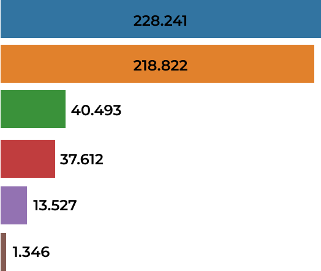
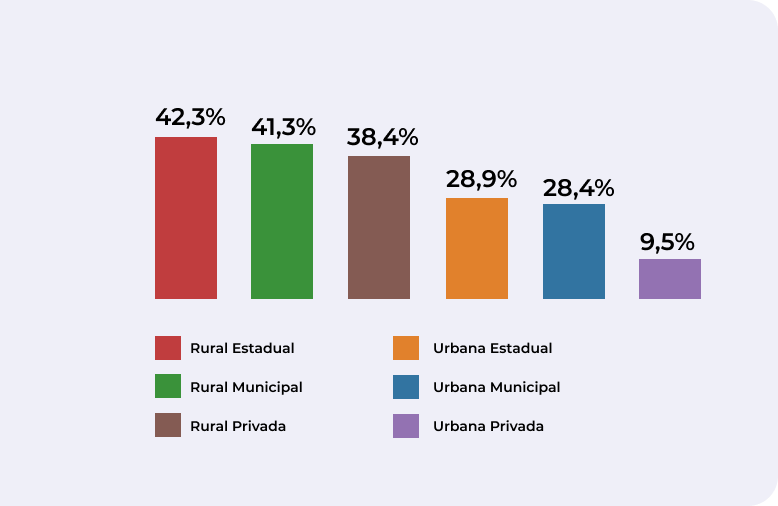

O ensino remoto no Maranhão durante a pandemia de COVID - 19


Matrículas
No Maranhão o número de alunos matriculados nas escolas ainda é baixo se comparado ao de pessoas na faixa etária escolar.

Distorção idade-série
Alunos da escola rural estadual foram os que apresentaram com mais frequência idade superior para a série frequentada

Escolas com acesso à internet
As escolas mais prejudicadas pela falta de acesso à internet para uso dos alunos foram as escolas da rede estadual da zona rural

Escolas da rede estadual localizadas na zona rural apresentaram menor índice de acesso à internet para utilização no processo de ensino

Adequação da formação docente
As menores taxas de adequação entre a formação dos docentes e as disciplinas que eles lecionam ocorerram na zona rural em todas as esferas